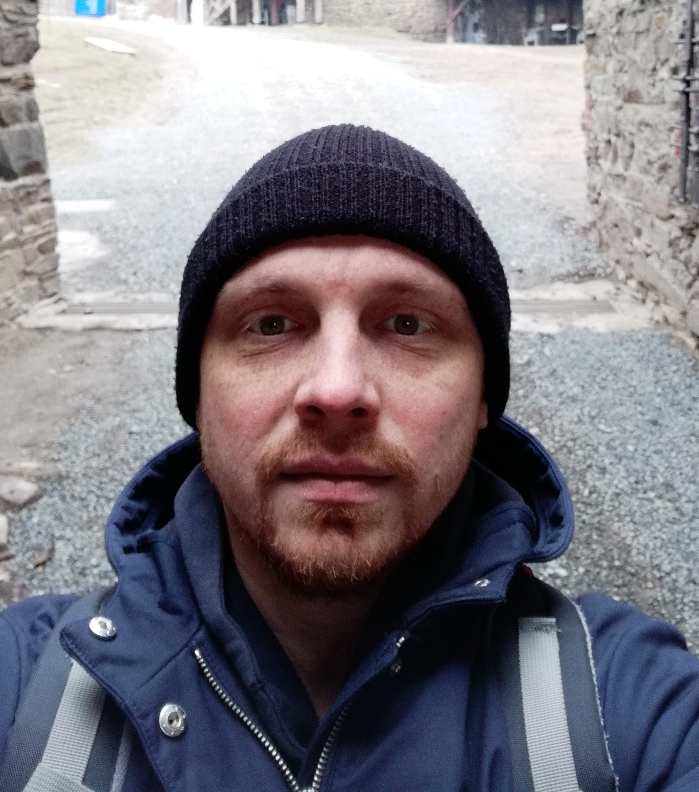

My goal is to get into the it sphere, because this is the future and this sphere has big potential.
I would like to constantly grow as front-end developer, as well as to develop team work skill.
The team is important because it creates an atmosphere in which you want to learn and develop.
I like to see process and final result of my work.
Taras Bazhenka
Objective: Junior Front-End Developer
 bazhenkataras@gmail.com.
bazhenkataras@gmail.com. +375297388555; +375298673579.
+375297388555; +375298673579. github.com/other-person.
github.com/other-person.

Skills:
Computer Science, Html5, CSS3, SASS preprocessor, Bootstrap 5, basic JS, basic React.
Courses and projects:
In the summer of 2020, I completed the IT Academy course on Html, Css and Basic JS.
I have experience in creating a website in Html5, Css3, basic JS.
I also have experience using the Sass preprocessor and experience in developing sites on Bootstrap 5. Studied manual testing. At the moment, I continue to study JS and React.
Language:
English A2.
Czech B1.
Aducation:
Technician.
Polytechnic College, Mozyr 2003-2007.
Interests:
Learn new knowledge.
Design of product.
Branding.
Woodworking in free time.